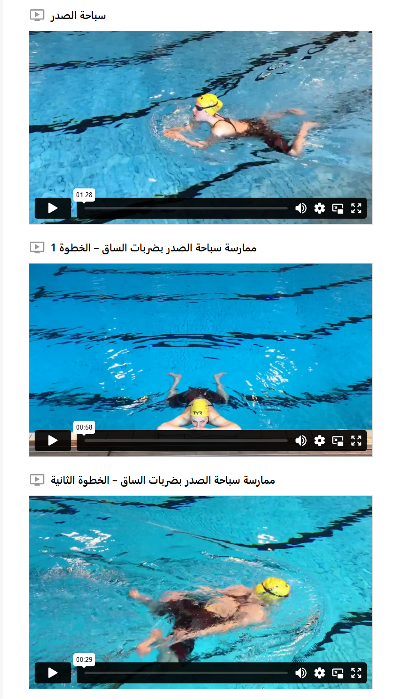

سباحة الصدر
من التقاليد أن السباحة على الصدر هي أول أسلوب يتعلمه الناس غالبًا في السويد — ولهذا السبب فهي أكثر أساليب السباحة شيوعًا. ليست الطريقة الأكثر طبيعية في السباحة، لكنها طريقة هادئة ومريحة توفر الاستقرار وتتيح إبقاء الرأس فوق سطح الماء بسهولة طوال الوقت. إبقاء الرأس فوق الماء قد يكون أمرًا مهمًا في حالات الطوارئ، وذلك لمنع انخفاض حرارة الجسم ولرؤية الاتجاه الذي ينبغي السباحة نحوه.
في وضعية البداية، يجب أن يكون جسمك مستويًا قدر الإمكان عند السطح مع مد الذراعين إلى الأمام بشكل مستقيم. تعتمد التقنية على سحب الجسم إلى الأمام عبر الماء بواسطة الذراعين على جانبي الجسم. بعد ذلك، تسحب الكعبين نحو المؤخرة كحركة الضفدع وتدفع الماء إلى الخلف بباطن القدمين، بينما تدفع الذراعين إلى الأمام كالسهم بشكل مستقيم للعودة إلى وضعية البداية. في نهاية الحركة، تحاول الانزلاق في الماء بأقل مقاومة ممكنة.